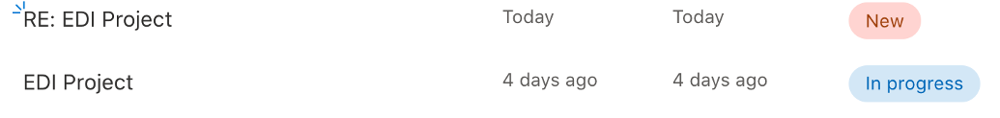

Duplicate tickets#
As noted above, when responding to a query it is important to reply to the latest email in the email thread (which includes the Ask-JGI automatic response) so that the Ask-JGI ticket number is included in the continuing email thread. This ensures that the same tracker ticket is updated as the email thread evolves.
Warning
The Ask-JGI tracker system will get messy if the Ask-JGI ticket number is not included in all emails in the thread.
The system breaks down if:
You reply directly to the query email instead of the auto-response and forget to manually include the tracking number in your reply.
The person who submitted the query removes the tracking number from the email thread (e.g. by trimming your email from the thread in their reply, thereby removing the tracking number).
The consequences of the system breaking down are as follows:
The person who submitted the query will get a new auto-response email generated each time they email the inbox (with a new tracking number).
There will be a new ticket logged in the tracker each time a new auto-response is generated by the querier, as shown in the example below:

Resolving duplicate tickets#
It is important that we remove any duplicated tickets from the Ask-JGI tracker, since we use the tracker for reporting purposes. This includes keeping a record of how many queries we get, and from which departments and faculties.
Note
Duplicate tickets can also arise when one querier sends multiple emails about the same query to the mailbox (e.g. starting a new email thread, or changing email title). So long as there are duplicate tickets that concern the same query they will still need to be cleaned up.
Please see the following instructions on what to do if you have a duplicate ticket in the tracker, depending on the situation:
Scenario 1: the tracking number was dropped from the thread
Scenario 2: the querier started a fresh email thread
Scenario 1: the tracking number was dropped from the thread#
If you find that there are duplicated tickets in the tracker (and new automated email replies in the email thread) as a consequence of the tracking number being omitted from an email, please follow these instructions to resolve the problem.
First, open the tracker and identify the original and duplicated ticket. You then need to:
Check the new ticket for any information that might be relevant to keep around. If there is important new info provided in this new email then you may need to manually copy/paste this information from the new ticket into the old ticket.
Update the old ticket to reflect the status of the new ticket (i.e. to update the date that the ticket was altered, and the new state of the ticket).
Once you are happy that you have copied any relevant information from the new ticket to the old ticket, you can delete the new ticket.
Then, once you have tidied up the duplicated tickets in the tracker, follow these steps:
The next time you compose a reply to the querier, remove any trace of the “new” tracking numbers from repeated auto-responses from the email thread. This may mean that you have to delete the quoted thread in the email body of your reply, so that your reply only includes your new text.
Include the original tracking ID in your reply.
Point out in your reply what has happened to acknowledge the repeated auto-replies and remind them to include the tracking number in subsequent emails:
As a reminder, please try to make sure you include this phrase somewhere in subsequent emails in this thread: {AskJGI-XXX}. This helps us to track how the AskJGI service is used and will suppress repeated automatic responses.
Scenario 2: the querier started a fresh email thread#
Sometimes the querier may send a new or follow up email to the mailbox with a new subject line, and possibly new people included in cc. Unless they have copied their tracking number into their reply, this will trigger a new ticket in the tracker.
First, open the tracker and identify the original and duplicated ticket. You then need to:
Check the new ticket for any information that might be relevant to keep around. If there is important new info provided in this new email then you may need to manually copy/paste this information from the new ticket into the old ticket.
Update the old ticket to reflect the status of the new ticket (i.e. to update the date that the ticket was altered, and the new state of the ticket).
Once you are happy that you have copied any relevant information from the new ticket to the old ticket, you can delete the new ticket.
Then, once you have tidied up the duplicated tickets in the tracker, follow these steps:
The next time you compose a reply to the querier, add the original tracking number in your email signature to make sure that this tracking number gets picked up in the ongoing thread.
Make sure that you reply to their original message this time, and not the automatic response that this new email thread will have triggered. This new automatic response will have a new tracking number, and we don’t want to use that. We want to keep the old tacking number so that any new emails will update the original ticket.
Point out in your reply what has happened to acknowledge the repeated auto-replies and remind them to include the tracking number in subsequent emails:
As a reminder, please try to make sure you include this phrase somewhere in subsequent emails in this thread: {AskJGI-XXX}. This helps us to track how the AskJGI service is used and will suppress repeated automatic responses.